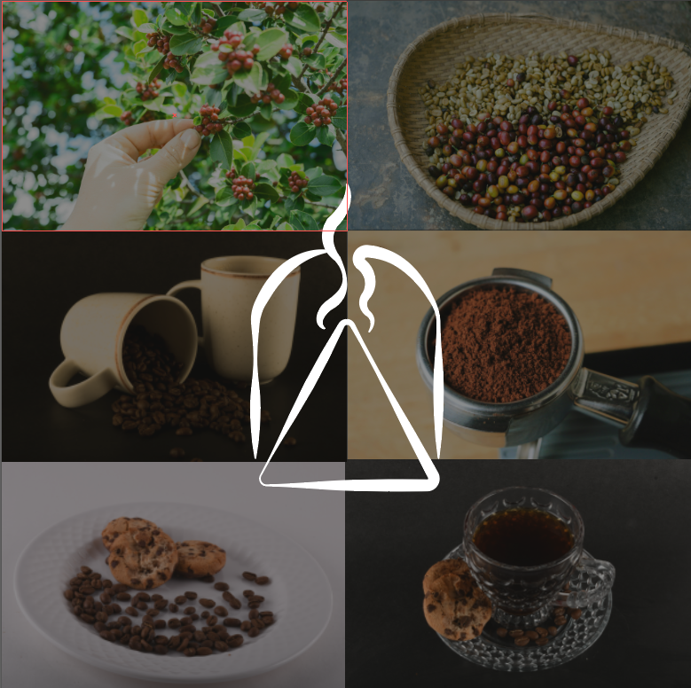

El Arte de Cultivar y Producir Café: Un Viaje desde el Campo hasta el Tazón
El café es una de las bebidas más populares del mundo, pero detrás de cada taza hay una historia de dedicación y esfuerzo de los campesinos que cultivan y cosechan los granos. Esta página busca destacar la importancia del trabajo de los campesinos en la producción de café y promover una mayor conciencia sobre la sostenibilidad y la justicia social en la industria cafetera.
El Proceso de Producción del Café
El proceso de producción del café comienza con el cultivo de las plantas de café, que requiere condiciones climáticas específicas y un cuidado constante. Los campesinos deben asegurarse de que las plantas reciban la cantidad adecuada de agua, sol y nutrientes para producir frutos de alta calidad.
1. Plantación
La plantación es la primera etapa, donde se siembran las semillas de café en viveros y luego se trasplantan a los campos. El manejo adecuado del cultivo es crucial para la calidad del grano.
Las plantas de café tardan entre 3 y 5 años en madurar y producir frutos.
2. Cosecha
La cosecha se realiza cuando las cerezas de café están maduras. Puede ser manual o mecanizada. La cosecha manual permite seleccionar frutos de mejor calidad.
Métodos: Picking (seleccionado manualmente) y stripping (mecanizado).
3. Procesamiento
Existen dos métodos principales: el proceso húmedo y el seco.
- Proceso Húmedo: Se elimina la pulpa de la cereza, y luego los granos se fermentan para eliminar el mucílago antes de secarse.
- Proceso Seco: Las cerezas se secan al sol, y luego se remueve la pulpa y la cáscara.
4. Trilla y Pulido
Después del secado, se retira la capa de pergamino y la capa plateada para obtener granos limpios.
Mejora la calidad y el aspecto del grano.
5. Tostado
El grano se somete a altas temperaturas para desarrollar su sabor y aroma característicos.
6. Molienda
El grano tostado se reduce a polvo para preparar el café. La molienda inmediata antes de preparar el café intensifica el aroma y sabor.
Diferencia entre Café en Grano y en Polvo
Café en Grano: Se refiere a los granos de café tostados, pero no molidos. Ideal para quienes prefieren moler su café antes de prepararlo.
Café en Polvo: Es el resultado de moler los granos tostados, más conveniente para la preparación rápida.
La Vida del Campesino Cafetero
Los campesinos cafeteros enfrentan numerosos desafíos, desde las fluctuaciones en los precios del café hasta las condiciones climáticas adversas. A pesar de estos obstáculos, su trabajo es fundamental para mantener la calidad y la disponibilidad del café.